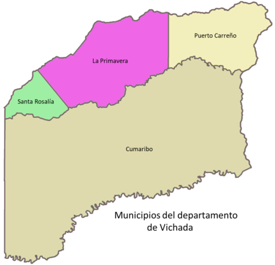

El departamento de Vichada es una región ubicada en el este de Colombia, limitando al norte con el departamento de Meta, al sur con Amazonas, al este con Vaupés, y al oeste con Casanare. Es uno de los departamentos menos poblados del país, con una población que no supera los 100,000 habitantes y una superficie de aproximadamente 100,000 km², lo que lo convierte en uno de los más extensos de Colombia.
La capital del departamento de Vichada es Puerto Carreño. Esta ciudad se encuentra situada a orillas del río Orinoco, cerca de la frontera con Venezuela. Puerto Carreño es un importante centro administrativo y comercial de la región, y se destaca por su papel en la conexión entre Colombia y Venezuela, así como por su proximidad a diversas rutas fluviales. Además, es conocida por su riqueza natural y su biodiversidad, ofreciendo acceso a paisajes llaneros y ecosistemas diversos.
La cultura en Vichada es diversa, influenciada por las comunidades indígenas, que representan una parte importante de la población, así como por la mezcla de tradiciones de colonos y habitantes de otras regiones. Las comunidades indígenas, como los Piapoco y Sikuani, mantienen sus tradiciones, lenguas y costumbres vivas, lo que enriquece el patrimonio cultural de la región.
A pesar de ser menos desarrollado, el turismo en Vichada tiene un gran potencial, especialmente en el ecoturismo. Las atracciones naturales, como los ríos y la fauna silvestre, ofrecen oportunidades para el avistamiento de aves, pesca y exploración de la naturaleza. Parque Nacional Natural El Tuparro es uno de los principales destinos turísticos, famoso por su biodiversidad y paisajes impresionantes.